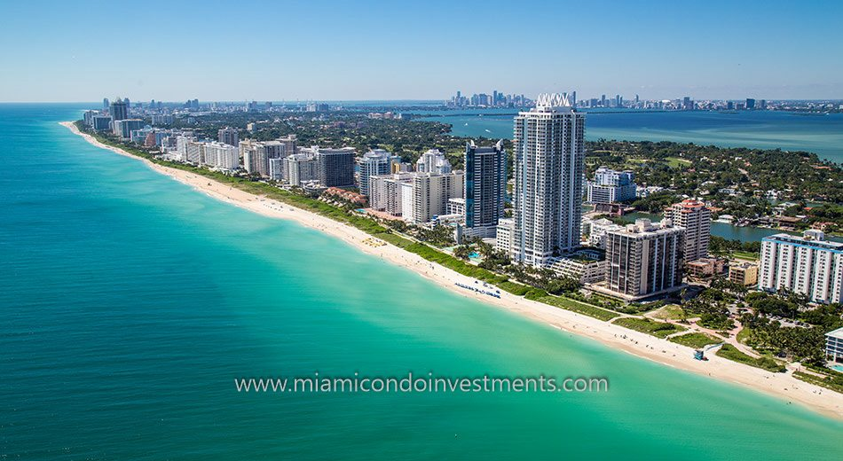

Miami Beach
Miami Beach is where a mix of cultures, residents and travelers mingle. A wide variety of people – including waifish models, amateur architecture critics, distinguished seniors and sun-seeking families – enjoy the renowned shores of "America's Riviera." North Miami Beach is where you'll find the kid-friendliest beaches and the most affordable restaurants and hotels. Less than 10 miles away are the galleries, museums and theaters of Greater Miami.